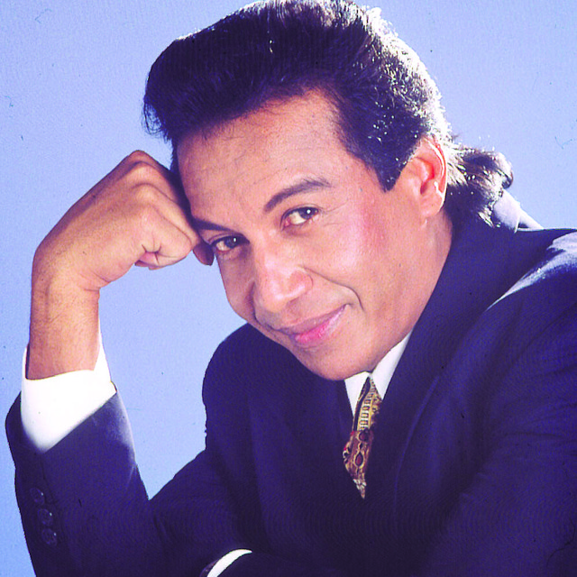

Diomedes Díaz, El Cacique de la Junta
Diomedes Díaz Maestre (San Juan del Cesar, La Guajira, 26 de mayo de 1957 - Valledupar, 22 de diciembre de 2013), apodado «El Cacique de La Junta», fue un cantante y compositor colombiano de música vallenata. En el aspecto musical, Diomedes Díaz es el mayor vendedor de discos en la historia del Vallenato, las ventas de sus discos superan los 20 millones a lo largo de toda su carrera, por lo que se hizo merecedor de discos de oro, de platino y de diamante, único en Colombia hasta 2008 cuando Silvestre Dangond también lo adquirió con su álbum El Original. En 2010 ganó el Grammy Latino en la categoría Cumbia/Vallenato. Querido e idolatrado por muchos, los seguidores de Diomedes adoptaron el apodo de "diomedistas", mientras que Diomedes los llamaba su "fanaticada".